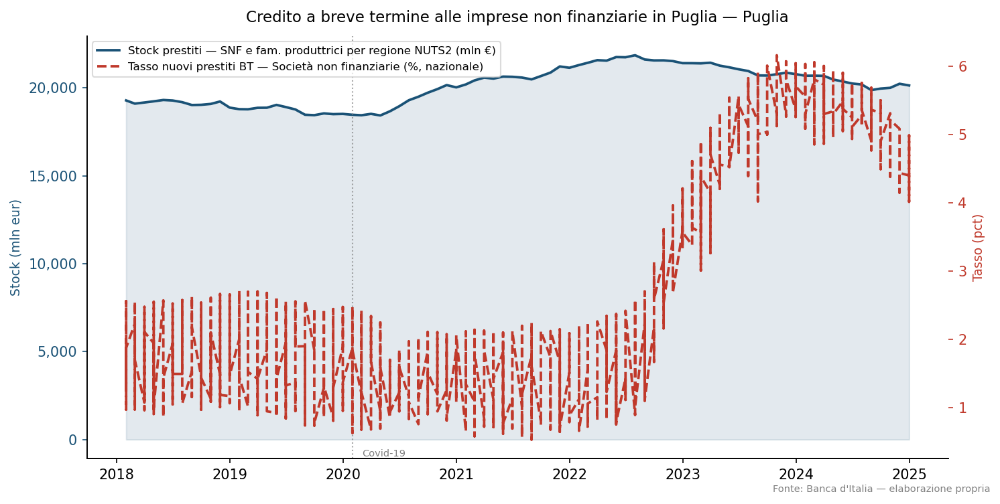

Credito alle imprese non finanziarie in Puglia
Analisi di stock e tassi, 2018–2024
Paolo Volterra ![]()
Analisi dell’evoluzione dello stock di prestiti alle società non finanziarie e delle famiglie produttrici in Puglia nel periodo 2018–2024, in relazione al ciclo dei tassi sui nuovi prestiti a livello nazionale. Fonte: Banca d’Italia (TDB10226, MIR0200).
credito, Puglia, tassi, BancaItalia, MIR, TDB
Codice
# a1b2c3d4
import json
import pandas as pd
from pathlib import Path
from IPython.display import Markdown, display
results = json.loads(Path("OUT/results.json").read_text())
summary = results["summary"]Codice
# f1a2b3c4
narrative_path = Path("OUT/narrative.md")
if narrative_path.exists():
text = narrative_path.read_text()
# rimuove l'intestazione automatica (righe <!-- ... -->)
lines = [l for l in text.splitlines() if not l.startswith("<!--")]
display(Markdown("\n".join(lines)))
else:
display(Markdown("> *Narrativa non ancora generata. Eseguire `step3_narrative.py`.*"))## Sintesi
Nel quadro dell’analisi Banche al Mezzogiorno: sportelli, impieghi e sofferenze vs Centro-Nord, presentiamo i risultati relativi ai dati disponibili dal 2009 al 2024. Il dataset considera come Mezzogiorno le regioni Abruzzo, Molise, Campania, Puglia, Basilicata, Calabria, Sicilia e Sardegna, mentre il Centro-Nord include Piemonte, Valle d’Aosta, Liguria, Lombardia, Veneto, Friuli Venezia Giulia, Emilia-Romagna, Toscana, Umbria, Marche e Lazio.
Le sofferenze SNF nel Mezzogiorno sono state in calo del 60% rispetto ai valori medi pre-pandemia, con un valore finale di 2596 milioni di € nel 2024, contro i 17850,66 milioni di € della media annuale pre-crisi. Invece, le sofferenze SNF nel Centro-Nord sono scese del 90%, con un valore finale di 8393 milioni di € nel 2024, contro i 68986,59 milioni di € della media annuale pre-crisi.
Le impieghi SNF nel Mezzogiorno sono scesi del 17% rispetto ai valori medi pre-pandemia, con un valore finale di 92175,17 milioni di € nel 2024, contro i 109029,01 milioni di € della media annuale pre-crisi. Le impieghi SNF nel Centro-Nord sono scese del 23% rispetto ai valori medi pre-pandemia, con un valore finale di 523898,47 milioni di € nel 2024, contro i 655295,46 milioni di € della media annuale pre-crisi.
Il numero di sportelli bancari nel Mezzogiorno è sceso del 35% rispetto ai valori medi pre-pandemia, con un valore finale di 8680 nel 2024, contro i 11754 della media annuale pre-crisi. Il numero di sportelli bancari nel Centro-Nord è sceso del 39% rispetto ai valori medi pre-pandemia, con un valore finale di 29302 nel 2024, contro i 41187,6 della media annuale pre-crisi.
1 Evidenze
2 Implicazioni per il credito
Gli sviluppi osservati nel Mezzogiorno suggeriscono un’erosione della rete bancaria, con una contrazione dei sofferenze SNF e degli impieghi SNF rispetto ai valori medi pre-crisi. Tuttavia, la situazione resta complessa, con un divario strutturale tra il Mezzogiorno e il Centro-Nord che richiede ulteriori analisi per comprendere le implicazioni operative per intermediari e imprenditori nella regione.
L’intensità del cleanup NPL nel periodo 2017-2024 potrebbe avere un impatto significativo sulla situazione dei crediti nel Mezzogiorno, richiedendo una gestione attenta da parte delle banche per preservare la stabilità finanziaria della regione.
Inoltre, l’erosione della rete bancaria potrebbe avere implicazioni per il servizio pubblico e per i cittadini del Mezzogiorno, con possibili conseguenze sulla disponibilità di prodotti finanziari e servizi associati.
Per comprendere meglio la situazione e le implicazioni future, è necessario continuare a monitorare i dati e a analizzarne le tendenze.
3 Dati
3.1 Grafico

Figura 1: Evoluzione dello stock di prestiti e dei tassi sui nuovi prestiti
3.2 Statistiche di sintesi
Codice
# b2c3d4e5
rows = []
for sid, s in summary.items():
lbl = s.get("label", sid)
unit = s.get("unit", "")
fmt = ",.2f" if unit == "pct" else ",.0f"
pre = s.get("media_precovid")
var = s.get("var_su_precovid")
rows += [
(f"{lbl} — ultimo valore", f"{s['ultimo_valore']:{fmt}}", s["ultima_data"]),
(f"{lbl} — media pre-Covid", f"{pre:{fmt}}" if pre else "n/d", "2018–2019"),
(f"{lbl} — variazione", f"{var:+.2f}" if var else "n/d", ""),
(f"{lbl} — massimo periodo", f"{s['max']:{fmt}}", ""),
]
df_tab = pd.DataFrame(rows, columns=["Indicatore", "Valore", "Riferimento"])
df_tab.style.hide(axis="index")| Indicatore | Valore | Riferimento |
|---|---|---|
| Sofferenze SNF — Mezzogiorno (mln €) — ultimo valore | 2,596 | 2024-12-31 |
| Sofferenze SNF — Mezzogiorno (mln €) — media pre-Covid | 17,851 | 2018–2019 |
| Sofferenze SNF — Mezzogiorno (mln €) — variazione | -15254.66 | |
| Sofferenze SNF — Mezzogiorno (mln €) — massimo periodo | 28,294 | |
| Sofferenze SNF — Centro-Nord (mln €) — ultimo valore | 8,393 | 2024-12-31 |
| Sofferenze SNF — Centro-Nord (mln €) — media pre-Covid | 68,987 | 2018–2019 |
| Sofferenze SNF — Centro-Nord (mln €) — variazione | -60593.59 | |
| Sofferenze SNF — Centro-Nord (mln €) — massimo periodo | 110,511 | |
| Impieghi SNF — Mezzogiorno (mln €) — ultimo valore | 92,175 | 2024-12-31 |
| Impieghi SNF — Mezzogiorno (mln €) — media pre-Covid | 109,029 | 2018–2019 |
| Impieghi SNF — Mezzogiorno (mln €) — variazione | -16853.83 | |
| Impieghi SNF — Mezzogiorno (mln €) — massimo periodo | 130,058 | |
| Impieghi SNF — Centro-Nord (mln €) — ultimo valore | 523,898 | 2024-12-31 |
| Impieghi SNF — Centro-Nord (mln €) — media pre-Covid | 655,295 | 2018–2019 |
| Impieghi SNF — Centro-Nord (mln €) — variazione | -131396.99 | |
| Impieghi SNF — Centro-Nord (mln €) — massimo periodo | 776,817 | |
| Sportelli bancari — Mezzogiorno (n.) — ultimo valore | 8,680 | 2024-12-31 |
| Sportelli bancari — Mezzogiorno (n.) — media pre-Covid | 11,754 | 2018–2019 |
| Sportelli bancari — Mezzogiorno (n.) — variazione | -3074.00 | |
| Sportelli bancari — Mezzogiorno (n.) — massimo periodo | 12,848 | |
| Sportelli bancari — Centro-Nord (n.) — ultimo valore | 29,302 | 2024-12-31 |
| Sportelli bancari — Centro-Nord (n.) — media pre-Covid | 41,188 | 2018–2019 |
| Sportelli bancari — Centro-Nord (n.) — variazione | -11885.60 | |
| Sportelli bancari — Centro-Nord (n.) — massimo periodo | 45,888 |
3.3 Serie storiche
Codice
# c3d4e5f6
df_stock = pd.read_parquet("OUT/data/credito_bt_puglia_2018_2024_stock.parquet")
df_tassi = pd.read_parquet("OUT/data/credito_bt_puglia_2018_2024_tassi.parquet")
df_merge = (
df_stock.rename(columns={"stock": "Stock (mln €)"})
.merge(df_tassi.rename(columns={"tasso_pct": "Tasso (%)"}), on="data")
.assign(data=lambda d: d["data"].dt.strftime("%Y-%m"))
.rename(columns={"data": "Data"})
.assign(**{"Stock (mln €)": lambda d: d["Stock (mln €)"].map("{:,.0f}".format)})
)
df_merge.style.hide(axis="index")| Data | Stock (mln €) | Tasso (%) |
|---|---|---|
| 2018-01 | 19,286 | 1.421400 |
| 2018-02 | 19,103 | 1.540700 |
| 2018-03 | 19,169 | 1.536800 |
| 2018-04 | 19,235 | 1.472900 |
| 2018-05 | 19,312 | 1.435400 |
| 2018-06 | 19,282 | 1.493800 |
| 2018-07 | 19,186 | 1.493400 |
| 2018-08 | 19,026 | 1.554400 |
| 2018-09 | 19,037 | 1.457800 |
| 2018-10 | 19,087 | 1.526800 |
| 2018-11 | 19,226 | 1.510300 |
| 2018-12 | 18,877 | 1.471800 |
| 2019-01 | 18,789 | 1.474000 |
| 2019-02 | 18,782 | 1.522900 |
| 2019-03 | 18,866 | 1.421500 |
| 2019-04 | 18,871 | 1.459800 |
| 2019-05 | 19,033 | 1.426400 |
| 2019-06 | 18,909 | 1.348500 |
| 2019-07 | 18,772 | 1.371200 |
| 2019-08 | 18,472 | 1.258900 |
| 2019-09 | 18,448 | 1.263100 |
| 2019-10 | 18,549 | 1.310400 |
| 2019-11 | 18,506 | 1.291400 |
| 2019-12 | 18,519 | 1.370800 |
| 2020-01 | 18,471 | 1.178400 |
| 2020-02 | 18,443 | 1.253400 |
| 2020-03 | 18,522 | 1.052600 |
| 2020-04 | 18,431 | 1.064500 |
| 2020-05 | 18,669 | 1.208400 |
| 2020-06 | 18,956 | 1.262700 |
| 2020-07 | 19,297 | 1.189000 |
| 2020-08 | 19,498 | 1.146900 |
| 2020-09 | 19,725 | 1.286400 |
| 2020-10 | 19,929 | 1.285400 |
| 2020-11 | 20,159 | 1.327900 |
| 2020-12 | 20,028 | 1.382800 |
| 2021-01 | 20,197 | 1.172200 |
| 2021-02 | 20,425 | 1.142000 |
| 2021-03 | 20,583 | 1.254500 |
| 2021-04 | 20,526 | 1.186300 |
| 2021-05 | 20,641 | 1.127500 |
| 2021-06 | 20,630 | 1.172300 |
| 2021-07 | 20,587 | 1.049200 |
| 2021-08 | 20,482 | 1.072100 |
| 2021-09 | 20,671 | 1.155700 |
| 2021-10 | 20,870 | 1.141100 |
| 2021-11 | 21,219 | 1.092600 |
| 2021-12 | 21,143 | 1.184400 |
| 2022-01 | 21,298 | 1.124000 |
| 2022-02 | 21,425 | 1.089600 |
| 2022-03 | 21,576 | 1.228900 |
| 2022-04 | 21,549 | 1.229100 |
| 2022-05 | 21,752 | 1.188200 |
| 2022-06 | 21,740 | 1.442200 |
| 2022-07 | 21,855 | 1.311200 |
| 2022-08 | 21,613 | 1.446800 |
| 2022-09 | 21,561 | 1.992000 |
| 2022-10 | 21,564 | 2.537200 |
| 2022-11 | 21,522 | 2.998200 |
| 2022-12 | 21,405 | 3.552700 |
| 2023-01 | 21,403 | 3.719300 |
| 2023-02 | 21,394 | 3.550900 |
| 2023-03 | 21,431 | 4.300800 |
| 2023-04 | 21,265 | 4.521800 |
| 2023-05 | 21,168 | 4.812200 |
| 2023-06 | 21,056 | 5.035600 |
| 2023-07 | 20,958 | 5.091900 |
| 2023-08 | 20,709 | 5.005500 |
| 2023-09 | 20,701 | 5.345100 |
| 2023-10 | 20,777 | 5.460900 |
| 2023-11 | 20,862 | 5.592100 |
| 2023-12 | 20,782 | 5.453700 |
| 2024-01 | 20,690 | 5.483900 |
| 2024-02 | 20,694 | 5.343600 |
| 2024-03 | 20,682 | 5.259600 |
| 2024-04 | 20,475 | 5.298700 |
| 2024-05 | 20,364 | 5.379600 |
| 2024-06 | 20,248 | 5.263100 |
| 2024-07 | 20,194 | 5.284100 |
| 2024-08 | 19,874 | 5.128000 |
| 2024-09 | 19,960 | 4.901700 |
| 2024-10 | 20,003 | 4.699900 |
| 2024-11 | 20,234 | 4.526800 |
| 2024-12 | 20,137 | 4.400700 |
4 Note metodologiche
Codice
# d4e5f6g7
notes_md = "\n".join(f"- {n}" for n in results.get("notes", []))
series_lines = []
for sid, s in summary.items():
series_lines.append(f"- **{sid}**: {s.get('label', sid)} ({s.get('unit','')})")
meta_md = "\n".join(series_lines)
Markdown(f"**Serie utilizzate**\n\n{meta_md}\n\n**Note di analisi**\n\n{notes_md}")Serie utilizzate
- SOF_SNF_SUD: Sofferenze SNF — Mezzogiorno (mln €) (mln_eur)
- SOF_SNF_CN: Sofferenze SNF — Centro-Nord (mln €) (mln_eur)
- STOCK_SNF_SUD: Impieghi SNF — Mezzogiorno (mln €) (mln_eur)
- STOCK_SNF_CN: Impieghi SNF — Centro-Nord (mln €) (mln_eur)
- SPORT_SUD: Sportelli bancari — Mezzogiorno (n.) (n)
- SPORT_CN: Sportelli bancari — Centro-Nord (n.) (n)
Note di analisi
- Mezzogiorno = Abruzzo (ITF1), Molise (ITF2), Campania (ITF3), Puglia (ITF4), Basilicata (ITF5), Calabria (ITF6), Sicilia (ITG1), Sardegna (ITG2)
- Centro-Nord = Piemonte (ITC1), VdA (ITC2), Liguria (ITC3), Lombardia (ITC4), Veneto (ITH3), FVG (ITH4), Emilia-Romagna (ITH5), Toscana (ITI1), Umbria (ITI2), Marche (ITI3), Lazio (ITI4). Nota: Trentino-AA non disponibile nel dataset corrente
- Sportelli: dato annuale fine anno, serie 2015-2024, fonte TDB20207
- Impieghi SNF: mensili 2009-2024, TDB10226. Include famiglie produttrici (SET_CTP SBI25)
- Sofferenze SNF lordi: trimestrali 2009-2024, TRI30031. Picco Q4 2016: 138.8 mld€ Italia
- Evidenziare divario strutturale Sud/Nord, intensità del cleanup NPL 2017-2024, erosione rete sportelli
Codice
# e5f6g7h8
Markdown(f"*Elaborazione dell'autore. Generato il {results['generated']}.*")Elaborazione dell’autore. Generato il 2026-04-11 06:23.